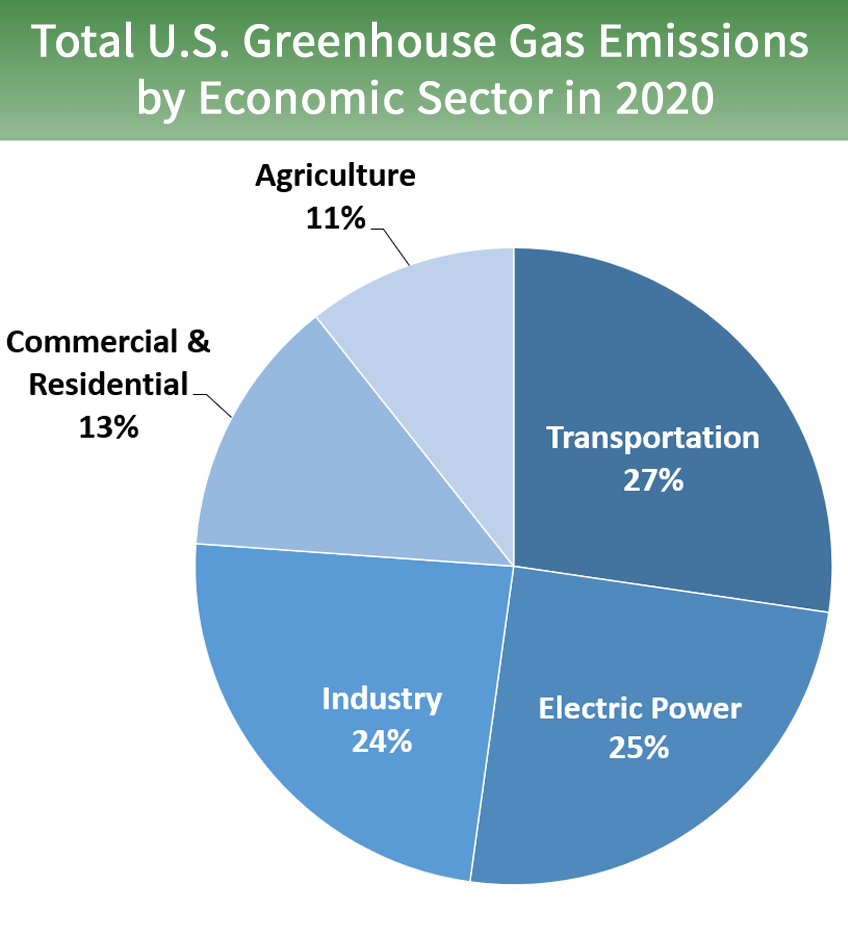
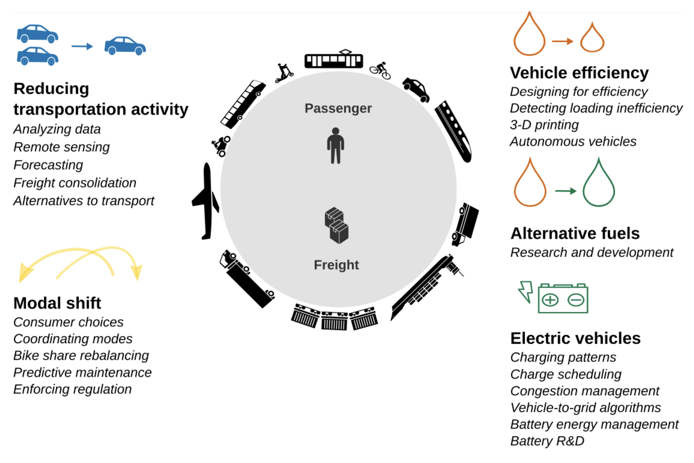

4 Policy Applications
This week, we will give an example of urban policies and how to incorporate remotely sensed data to achieve their plans.
4.1 Policies Summary
Policy: OneNYC 2050, New York
Selected policies
Volume 7 of 9 - A Livable Climate
- Initiative 20. Achieve Carbon Neutrality And 100 Percent Clean Electricity
- By 2050, New York City will have net-zero greenhouse gas (GHG) emissions citywide. To achieve this, we will reduce our emissions as much as possible and offset our “irreducible emissions”
- As transportation is the main cause of GHG emission in the United States (US EPA 2015), we will further look on the policies related to transportation for further investigating how can we amend the situation of GHG caused by transports.

Volume 8 of 9 - Efficient Mobility
Initiative 26. Reduce congestion and emissions- GHG emissions reduction - be able to reduce greenhouse gas (GHG) emissions, support sustainable growth, and achieve the ambitious goal we set in 2015 to have 80 percent of all trips in the city taken by sustainable modes by 2050
- Green The fleet - Near term emissions reductions will be achieved by implementing renewable diesel fuel, accelerating the transition to EV and hybrid vehicles, and increasing the efficiency of the fleet, which will help reduce the City’s fuel consumption to below 2014 levels.
4.2 Applications using Remote Sensing

There are many opportunities to reduce GHG emissions from transportation using machine learning and remote sensing. (Rolnick et al. 2022)
In our case study, we aim to incorporate remote sensing to reduce transportation activity and track the use of EV and hybrid vehicle which will result in CO2 emission reduction. Our proposed methodology is to monitor CO2 and transport mode in each area, then we can summarise the statistics of transports used in each area along with CO2 emission in each area too. According to our goal to make the transition to EV and hybrid vehicles, this information will benefit policymaker to track the progress of transition and CO2 emission reduction in each area.
Goal: Predict change in CO2 from switching behaviour in transport mode for decarbonizing transportation
Subtask:
- estimate average vehicle traffic
- classify vehicle types
- monitor CO2 emission
Data:
- Remote Sensing data
- Worldwide but lower resolution e.g. Sentinel-1/2, Landsat
- High resolution e.g. Vehicle Detection in Aerial Imagery (VEDAI)
- vehicle label for detection and classification
- CO2 Detected from Satellite data, e.g. Orbiting Carbon Observatory-3 (OCO-3)
Proposed Solutions:
- Task1: estimate average vehicle traffic
- Issue: Traditionally, traffic is monitored with ground based counters that are installed on selected roads. As ground-based counters require costly installation and maintenance, many countries do not have such systems.
- Methodology: Vehicles can also be detected in high-resolution satellite images with high accuracy, and image counts can serve to estimate average vehicle traffic
- Data: Remote Sensing data and vehicle label for detection
- Task2: classify vehicle types
- Methodology: Use convolutional neural network (CNN) with satellite imagery to classify vehicle types
- Data: Remote Sensing data and vehicle label for classification
- Sample project: https://github.com/AlperenCicek/vehicle-detection-from-satellite
- Task3: monitor CO2 emission
- Methodology: Having real-time maps of GHGs (detected from remote sensing) could help us quantify CO2 emissions. For example, data on emissions make it possible to set effective targets, and pinpointing the sources of emissions makes it possible to enforce regulation
- Data: Orbiting Carbon Observatory-3 (OCO-3) - measures and maps column CO2 in great detail
Global agendas:
According to United Nations 2030 Sustainable Development Goals (SDGs) agenda, our approach could help enable 2 SDGs which are
- SDG 11: Sustainable Cities and Communities
- reduce greenhouse gas emissions - a quarter of energy-related global greenhouse gas emissions come from transport and that these emissions are projected to grow substantially in the years to come
- SDG 13: Take urgent action to combat climate change and its impacts
- reaching net-zero carbon dioxide CO2 emissions globally by 2050
4.3 Reflection
This week’s lessons have been helpful in understanding the larger process of urban plans and improvement, of which remote sensing is an essential part. There are also global issues that need to be addressed. However, one solution may not fit all, due to the difference between areas. This lesson also shows how each local government address the similar issues in different ways. Ultimately, I could see the concrete action plans to address each urban issue from New York City’s strategic plan, which could be adopted to partially used for addressing similar issues in my country too.